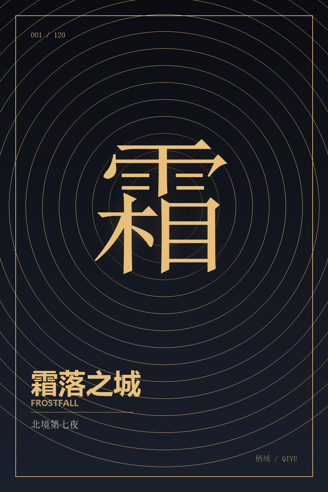
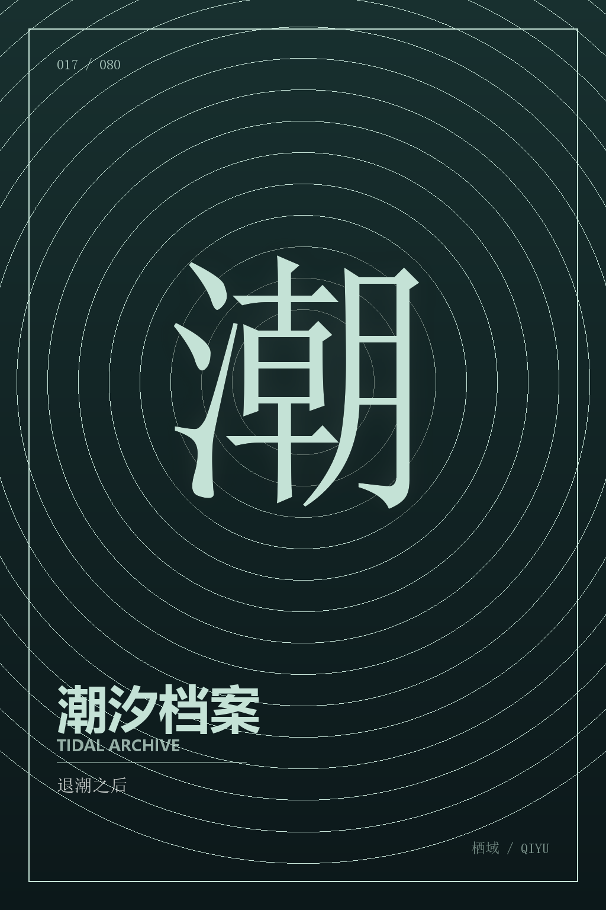
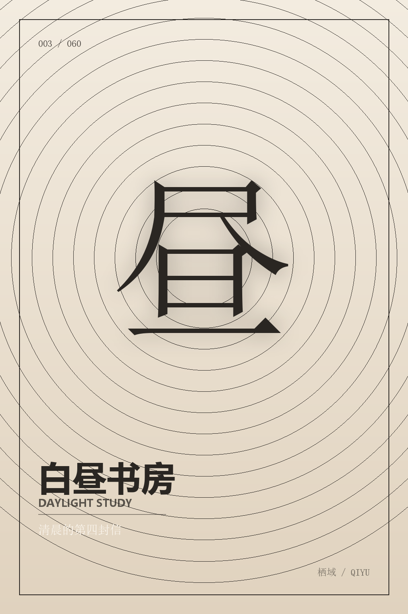

分层来源：背景 = 平面封面；主体 = 以字为形、带真实 alpha 的纹章；线稿 = 对主体 alpha 做边缘检测；文字 = 独立排版层。全部由 tools/make_layers.py 程序化派生，不是手绘角色分层，因此不能据此判断上游在真实分层素材上的上限。
现有两格只展示生产 CSS 的静态材质（应用内仅在悬停/倾斜时出现），不含 WebGL 着色器与指针光位；截图不能替代真机手感，正式取舍仍需在应用里看。